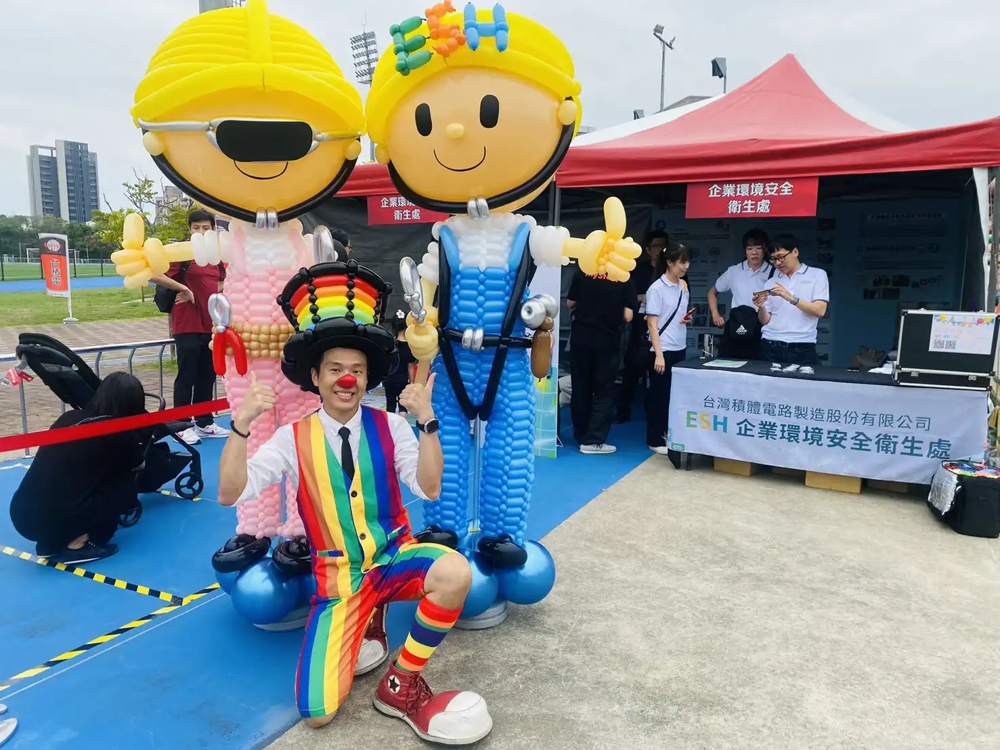
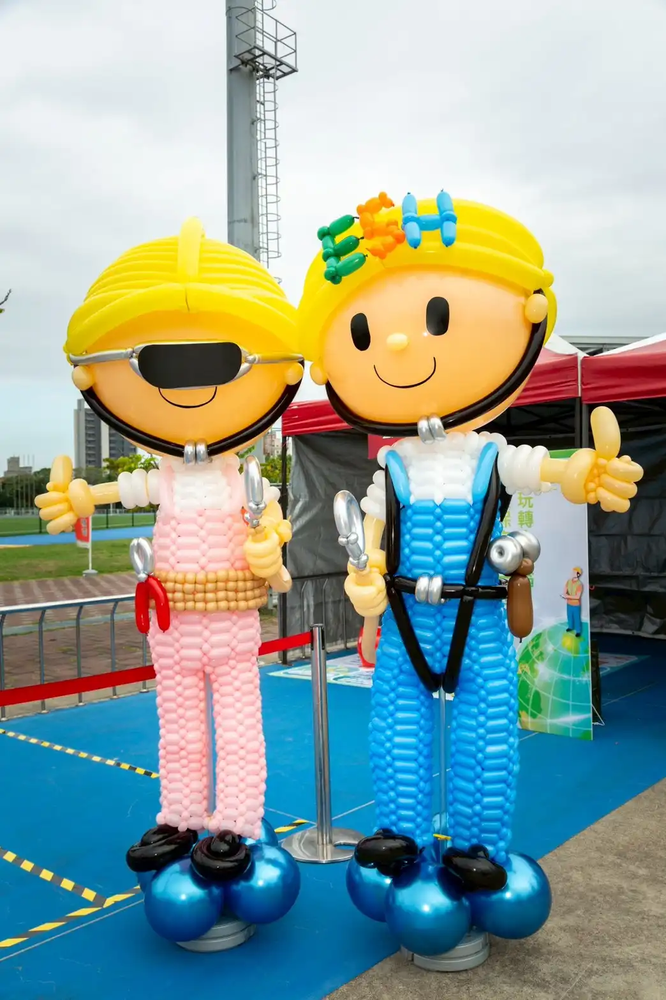
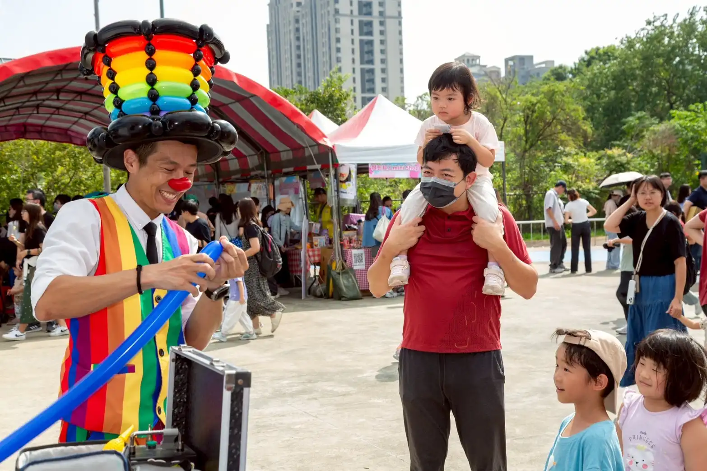
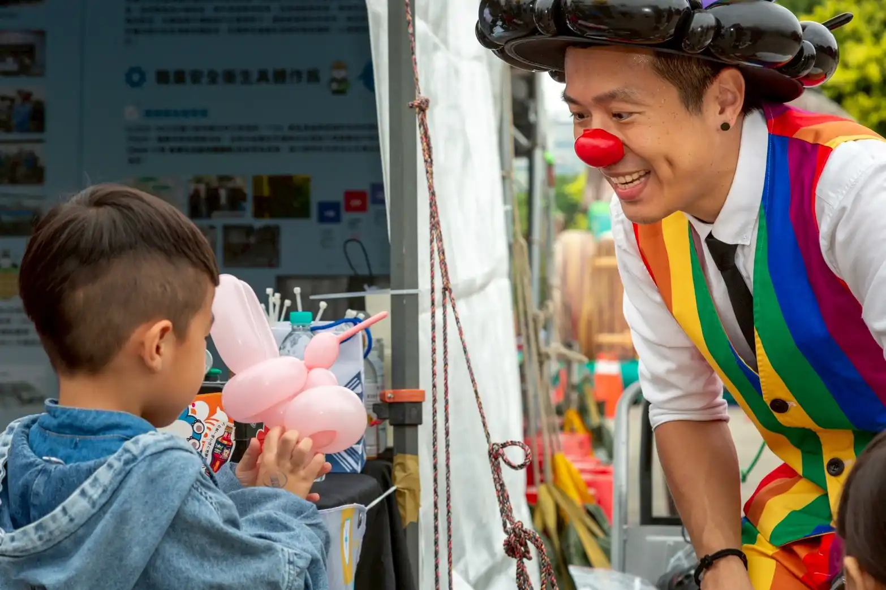

2025 台積電 (TSMC) 運動會｜220cm 巨型勞安氣球偶驚艷紀實
科技龍頭指定宣導演藝 × 巨大化氣球藝術｜氣球大叔 Sony 攜手台積電 ESH 處
📍 地點：新竹縣立體育場（台積電運動會現場）
護國神山的年度盛事：活力、創新與工安意識
2025 年「台積電運動會」在新竹縣立體育場隆重登場。這場年度盛會匯聚全球 TSMC 員工與家屬，展現卓越的企業凝聚力。其中，致力於永續與工安推廣的 ESH（企業環境安全衛生處） 攤位，今年特別邀約氣球大叔 Sony 合作，將藝術感官帶入嚴謹的宣導活動中。

工安宣導新高度：220 公分高「勞安氣球人偶」製作
為了讓嚴肅的工安宣導變得親民且富有感染力，Sony 應邀現場創作了兩座高達 220公分 的巨型「勞安氣球人偶」。從招牌黃色工程帽的精密比例，到亮橘色反光背心的色塊編織，每一處都展現了高難度的職業氣球工藝技術，完美契合台積電對細節與卓越的品質追求。

萬人互動：手折造型氣球傳遞親子溫度
除了震撼的大型裝置，Sony 在現場亦為 TSMC 員工家屬提供定點造型氣球互動服務。透過靈巧手藝，將一顆顆氣球化為活靈活現的卡通角色，為高科技產業的冷色調空間注入了溫潤的親子歡樂氛圍，成功為 ESH 攤位大幅增加賓客停留與宣導時間。


🏆 頂尖科技大廠一致肯定的專業實力
為什麼半導體與國際外商在重要盛事都指定 Sony？因為我們懂得將「企業核心價值」轉化為「有感的視覺藝術」：
- 🔹 年度指標： 2025 台積電運動會巨大氣球偶指定製作。
- 🔹 信任背書： 連續四年受邀 德州儀器 (TI) 全球家庭日。
- 🔹 跨國品質： 巴斯夫 (BASF) 親子日草地氣球秀嘉賓。
🔥 更多半導體龍頭與科技大廠精彩案例：
- 👉 外商大廠信任：德州儀器 (TI) 台北家庭日｜連續四年受邀紀錄
- 👉 新竹指標活動：新竹 SOGO OGAWA 活動｜客製 LOGO 魔術引流秀
- 👉 大型成果展現：新竹 Big City 勞動部創業展｜市集互動秀花絮
- 👉 台北企業盛事：玉山銀行家庭日｜兒童新樂園氣球迎賓表演
💡 關於新竹科技大廠氣球表演的常見問題
- Q: 在新竹舉辦科技廠家庭日或運動會，氣球大叔的巨型氣球裝置需要多久前預約？
- A: 針對台積電這類大型科技廠的專屬客製化巨型氣球裝置（如本次 220cm 的勞安人偶），從設計、打樣到備料需要極高的精密度。建議企業福委會或公關公司至少提前 1 至 2 個月與我們聯繫，確保能呈現最完美的企業形象與視覺震撼。
- Q: 運動會現場人潮動輒上萬人，定點造型氣球發送如何避免大排長龍或動線混亂？
- A: 我們擁有豐富的萬人大型活動控場經驗。除了手折氣球速度極快，我們強烈建議採用「1個巨型吸睛打卡點」搭配「定點高效率互動表演」。我們會配合發放號碼牌或趣味問答機制，將單純的「排隊等待」轉化為互動娛樂，有效消化人流並延長攤位宣導時間。
- Q: 除了勞安宣導人偶，氣球大叔可以製作半導體相關的特定產品或機台造型氣球嗎？
- A: 絕對沒問題！氣球大叔 Sony 非常擅長將生硬的硬體設備「氣球藝術化」。不論是晶圓、半導體機台、無塵服工程師，或是各科技大廠的企業吉祥物，我們都能用高質感的氣球工藝完美還原，為品牌行銷創造極佳的記憶點與社群曝光。
如果您正在規劃科技大廠家庭日、企業運動會、品牌宣導攤位或大型人流活動，也歡迎先參考大叔的 企業家庭日 / 品牌活動整合方案，了解如何依活動目標安排迎賓互動、主舞台內容與聚客流程。若您特別想了解巨型氣球裝置、定點互動與高效率發送的形式，也可以進一步查看 造型氣球互動服務 介紹，讓活動畫面、停留效果與企業識別一次到位。
🎈 正在尋找新竹科技大廠氣球表演嗎？
如果您也希望為您的活動創造像現場一樣爆棚的人氣與驚喜，氣球大叔 Sony 是您的首選！我們專注於提供高品質的互動演出與情境佈置：
- 百貨商場活動：中庭舞台秀、假日聚客、週年慶造勢。
- 品牌行銷推廣：大型氣球裝置、門市開幕、VIP 客戶派對。
- 企業家庭日：科技廠運動會、企業家庭日、ESG 宣導活動。
📅 本文整理於 2025 年 11 月 08 日，完整紀錄真實活動現場氛圍。